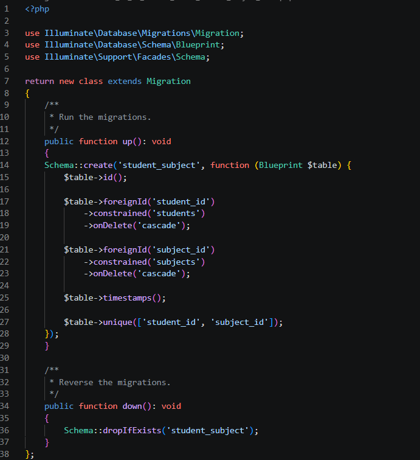
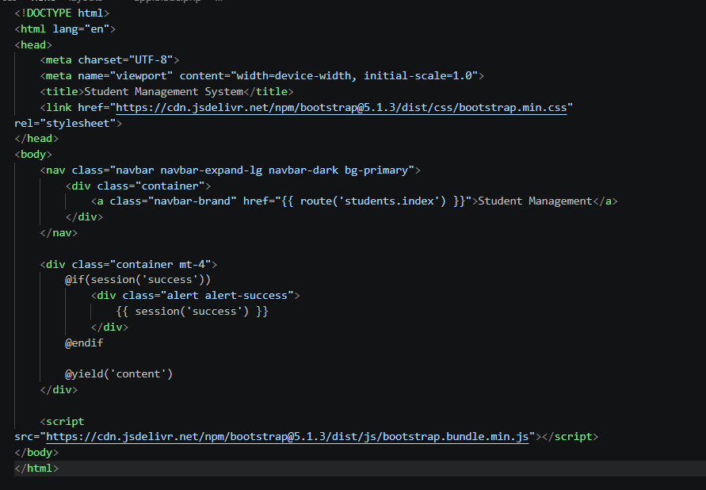
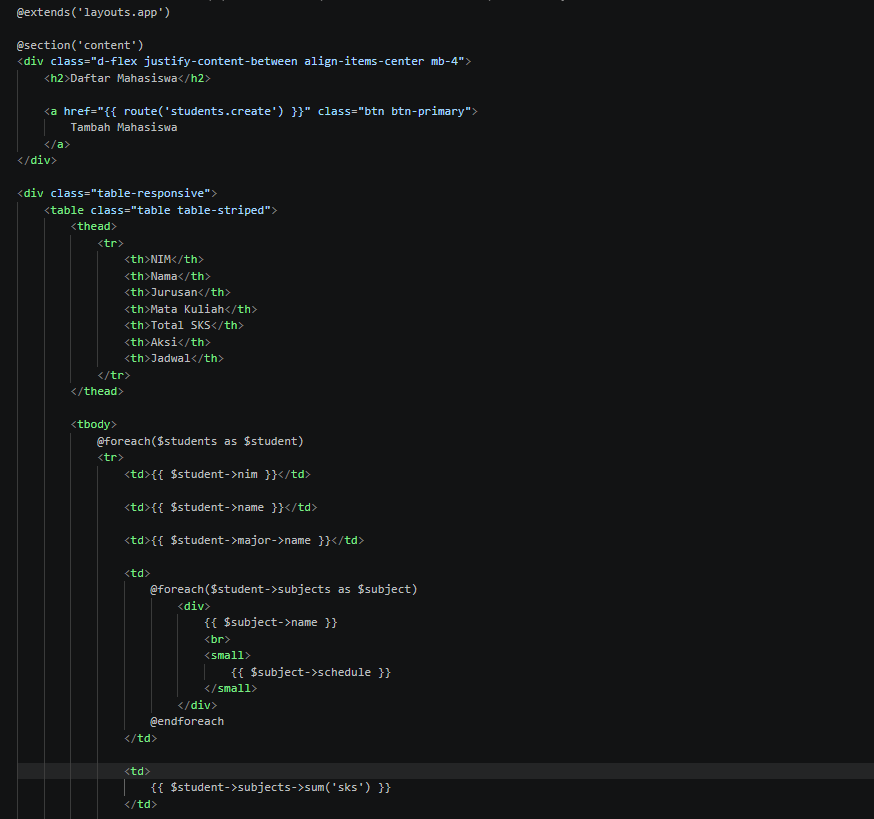
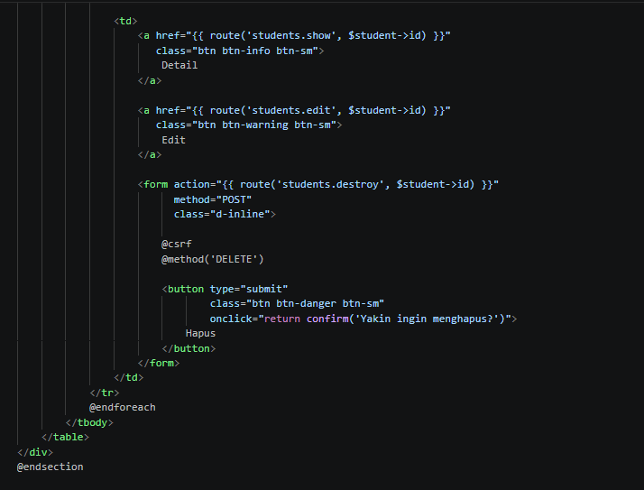
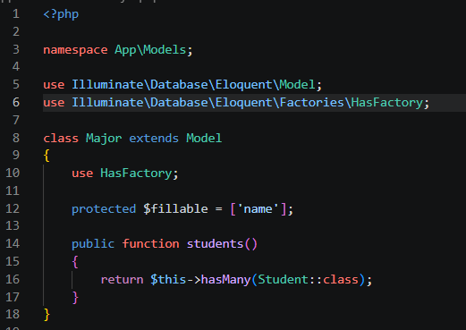
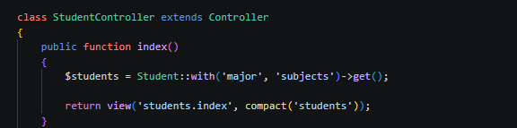
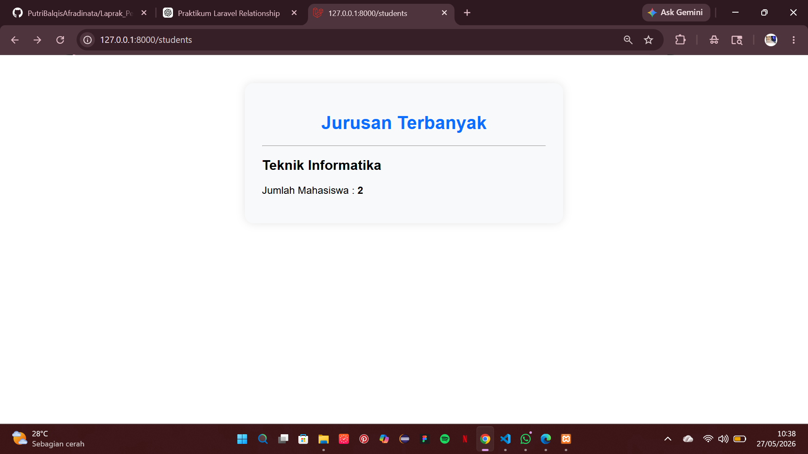
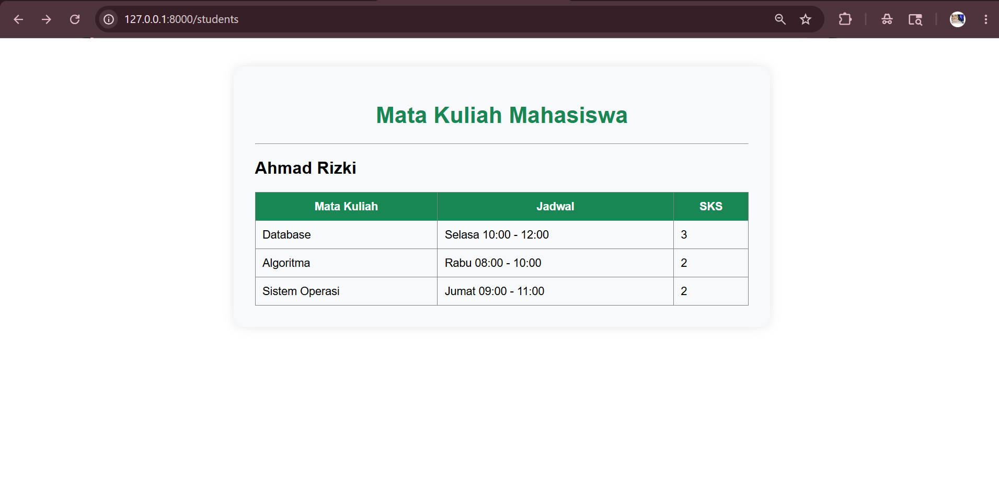
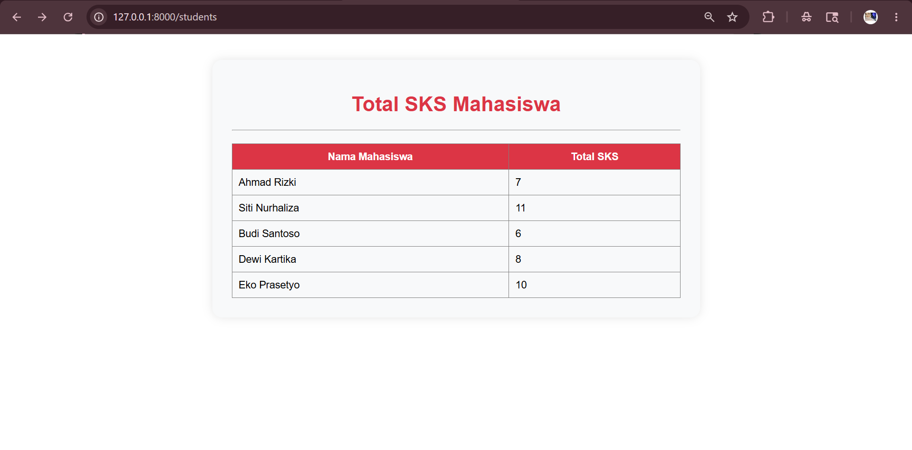

Report 4 — Laravel Relationship dan Eloquent ORM
I. Tujuan Praktikum
- Memahami proses instalasi dan konfigurasi Laravel 12.
- Memahami penggunaan Laravel UI untuk membuat sistem autentikasi (Login dan Register).
- Memahami proses integrasi template SB Admin 2 ke dalam Laravel.
- Memahami penggunaan Blade Template dalam membangun tampilan aplikasi.
- Memahami penggunaan Resource Controller pada Laravel.
- Membuat fitur CRUD (Create, Read, Update, Delete) untuk manajemen data User.
- Memahami penggunaan DataTables untuk menampilkan data secara lebih interaktif.
- Membangun aplikasi Sistem Informasi sederhana berbasis Laravel dengan tampilan dashboard yang responsif.
II. Dasar Teori
Laravel merupakan framework PHP berbasis MVC (Model View Controller) yang digunakan untuk mempermudah proses pengembangan aplikasi web. Laravel menyediakan berbagai fitur modern seperti routing, migration, middleware, authentication, Eloquent ORM, dan Blade Template Engine.
Laravel UI merupakan package tambahan yang digunakan untuk menghasilkan fitur authentication secara otomatis, seperti halaman Login, Register, dan Logout. Dengan Laravel UI, proses pembuatan sistem autentikasi menjadi lebih cepat dan mudah.
Authentication merupakan proses verifikasi identitas pengguna sebelum mengakses sistem. Pada Laravel, fitur authentication digunakan untuk membatasi akses aplikasi sehingga hanya pengguna yang telah login yang dapat mengakses halaman tertentu.
Blade Template Engine merupakan template engine bawaan Laravel yang digunakan untuk membuat tampilan website menjadi lebih terstruktur, dinamis, dan mudah dikelola. Blade memungkinkan pembuatan layout yang dapat digunakan kembali pada banyak halaman.
SB Admin 2 merupakan template dashboard berbasis Bootstrap yang digunakan untuk mempercantik tampilan aplikasi web. Template ini menyediakan berbagai komponen antarmuka seperti sidebar, navbar, card, tabel, dan form yang responsif serta mudah digunakan.
Resource Controller merupakan fitur Laravel yang digunakan untuk menangani operasi CRUD (Create, Read, Update, Delete) dalam satu controller. Resource Controller menyediakan method bawaan seperti index(), create(), store(), edit(), update(), dan destroy().
CRUD (Create, Read, Update, Delete) merupakan operasi dasar yang digunakan untuk mengelola data pada sebuah aplikasi. Pada praktikum ini CRUD diterapkan pada data User sehingga pengguna dapat menambahkan, menampilkan, mengubah, dan menghapus data melalui antarmuka web.
DataTables merupakan plugin JavaScript yang digunakan untuk meningkatkan fungsi tabel dengan menambahkan fitur pencarian (search), pengurutan data (sorting), dan pembagian halaman (pagination) secara otomatis.
Eloquent ORM (Object Relational Mapping) merupakan fitur Laravel yang memungkinkan developer berinteraksi dengan database menggunakan model dan object tanpa harus menuliskan query SQL secara manual sehingga kode program menjadi lebih rapi dan mudah dipelihara.
III. Langkah-Langkah Praktikum
-
Membuat Model dan Migration
Langkah pertama yang dilakukan yaitu membuat model Major, Student, dan Subject menggunakan artisan command Laravel. Model digunakan untuk menghubungkan aplikasi dengan tabel database menggunakan Eloquent ORM Laravel.php artisan make:model Major -m php artisan make:model Student -m php artisan make:model Subject -m
Opsi -m digunakan agar Laravel otomatis membuat migration bersamaan dengan model. Migration nantinya digunakan untuk membuat struktur tabel pada database.
Setelah command dijalankan, Laravel otomatis membuat file model pada folder app/Models dan file migration pada folder database/migrations.
-
Membuat Migration Major
Migration Major digunakan untuk membuat tabel majors pada database Laravel.Schema::create('majors', function (Blueprint $table) { $table->id(); $table->string('name'); $table->timestamps(); });Tabel majors digunakan untuk menyimpan data jurusan mahasiswa. Field name digunakan untuk menyimpan nama jurusan.

-
Membuat Migration Student
Migration Student digunakan untuk membuat tabel students.Schema::create('students', function (Blueprint $table) { $table->id(); $table->string('nim')->unique(); $table->string('name'); $table->text('address'); $table->foreignId('major_id')->constrained(); $table->timestamps(); });Pada tabel students terdapat foreign key major_id yang digunakan untuk menghubungkan mahasiswa dengan tabel jurusan.
Fungsi constrained() digunakan agar Laravel otomatis membuat foreign key ke tabel majors.

-
Membuat Migration Subject
Migration Subject digunakan untuk membuat tabel subjects.Schema::create('subjects', function (Blueprint $table) { $table->id(); $table->string('name'); $table->integer('sks'); $table->timestamps(); });Tabel subjects digunakan untuk menyimpan data mata kuliah dan jumlah SKS.

-
Membuat Pivot Table
Pivot table digunakan untuk relationship Many-to-Many antara mahasiswa dan mata kuliah.php artisan make:migration create_student_subject_table
Pivot table digunakan karena satu mahasiswa dapat mengambil banyak mata kuliah dan satu mata kuliah dapat diambil oleh banyak mahasiswa.
-
Membuat Struktur Pivot Table
Struktur pivot table dibuat menggunakan migration Laravel.Schema::create('student_subject', function (Blueprint $table) { $table->id(); $table->foreignId('student_id')->constrained(); $table->foreignId('subject_id')->constrained(); $table->timestamps(); });Tabel student_subject digunakan untuk menyimpan relasi antara mahasiswa dan mata kuliah.

-
Menjalankan Migration
Migration dijalankan agar seluruh tabel berhasil dibuat pada database MySQL.php artisan migrate
Setelah migration berhasil dijalankan, tabel majors, students, subjects, dan student_subject akan muncul pada database Laravel.
-
Membuat Model
Model digunakan untuk merepresentasikan tabel database pada Laravel menggunakan Eloquent ORM.php artisan make:model Major php artisan make:model Student php artisan make:model SubjectModel Major digunakan untuk tabel jurusan, model Student digunakan untuk tabel mahasiswa, dan model Subject digunakan untuk tabel mata kuliah.
File model otomatis dibuat pada folder app/Models. Model nantinya digunakan untuk melakukan query database menggunakan Eloquent ORM Laravel.


-
Membuat Seeder
Seeder digunakan untuk menambahkan data awal ke dalam database Laravel.php artisan make:seeder MajorSeeder php artisan make:seeder StudentSeeder php artisan make:seeder SubjectSeeder
Seeder mempermudah proses pengisian data awal pada database tanpa harus menginput data secara manual.


-
Menambahkan Seeder ke DatabaseSeeder
Seeder didaftarkan pada file DatabaseSeeder agar dapat dijalankan otomatis oleh Laravel.$this->call([ MajorSeeder::class, SubjectSeeder::class, StudentSeeder::class, ]);DatabaseSeeder berfungsi untuk menjalankan seluruh seeder yang ada pada project Laravel.

-
Menjalankan Seeder
Seeder dijalankan agar data otomatis masuk ke database Laravel.php artisan db:seed
Setelah proses seeding selesai, data jurusan, mahasiswa, dan mata kuliah berhasil tersimpan pada database.
-
Membuat Relationship pada Model
Setelah seluruh tabel berhasil dibuat, langkah berikutnya yaitu membuat relationship antar model menggunakan Eloquent ORM Laravel.public function major() { return $this->belongsTo(Major::class); } public function subjects() { return $this->belongsToMany(Subject::class); }Method belongsTo() digunakan untuk menunjukkan bahwa satu mahasiswa hanya memiliki satu jurusan.
Sedangkan belongsToMany() digunakan karena mahasiswa dapat mengambil banyak mata kuliah.
-
Membuat Controller
Controller digunakan untuk mengatur logika aplikasi dan menghubungkan model dengan view Laravel.$students = Student::with(['major', 'subjects'])->get();
Query tersebut digunakan untuk mengambil seluruh data mahasiswa beserta jurusan dan mata kuliah.
Method with() digunakan untuk eager loading agar query database menjadi lebih efisien.

-
Membuat Route
Route digunakan untuk menghubungkan URL dengan controller Laravel.Route::resource('students', StudentController::class);Route resource otomatis membuat route CRUD seperti create, store, edit, update, dan delete.

-
Membuat Layout Utama
Layout utama dibuat menggunakan Blade Template dan Bootstrap.Layout digunakan sebagai template utama seluruh halaman Laravel agar tampilan lebih rapi dan konsisten.

-
Membuat View Index Student
View index digunakan untuk menampilkan seluruh data mahasiswa.Data mahasiswa ditampilkan menggunakan tabel Bootstrap agar tampilan lebih rapi.


-
Membuat Form Tambah Mahasiswa
Form create digunakan untuk menambahkan data mahasiswa baru.Form terdiri dari NIM, nama, alamat, jurusan, dan mata kuliah mahasiswa.

-
Menjalankan Laravel
Laravel dijalankan menggunakan artisan command agar aplikasi dapat dibuka pada browser.php artisan serve
Setelah command dijalankan, Laravel akan memberikan localhost yang dapat diakses melalui browser.
-
Menampilkan Hasil
Setelah seluruh konfigurasi selesai, halaman students berhasil ditampilkan pada browser.http://127.0.0.1:8000/students
Halaman tersebut menampilkan data mahasiswa, jurusan, mata kuliah, dan total SKS menggunakan relationship Laravel.

IV. Challenge
Pada challenge praktikum ini ditambahkan fitur jadwal mata kuliah pada setiap subject.
1. Menambahkan Kolom Schedule pada Migration
Kolom schedule ditambahkan pada tabel subjects menggunakan migration Laravel.
$table->string('schedule');

2. Menambahkan Data Jadwal pada Seeder
Jadwal mata kuliah kemudian ditambahkan pada SubjectSeeder.
[
'name' => 'Pemrograman Web',
'sks' => 3,
'schedule' => 'Senin 08:00'
]

3. Menampilkan Jadwal pada View Student
Jadwal mata kuliah ditampilkan pada halaman student menggunakan Blade Template.
@foreach($student->subjects as $subject)
<div>
{{ $subject->name }}
<br>
<small>
{{ $subject->schedule }}
</small>
</div>
@endforeach

4. Hasil Challenge
Setelah challenge selesai dikerjakan, jadwal mata kuliah berhasil tampil pada halaman student.

V. Tugas Query Relationship
-
Menampilkan semua mahasiswa beserta jurusan
dan mata kuliahnya
$students = Student::with(['major', 'subjects'])->get();
Query tersebut digunakan untuk mengambil seluruh data mahasiswa beserta relasi jurusan dan mata kuliahnya.

-
Menampilkan jurusan dengan mahasiswa terbanyak
$major = Major::withCount('students') ->orderBy('students_count', 'desc') ->first();Query tersebut digunakan untuk menghitung jumlah mahasiswa pada setiap jurusan menggunakan withCount().

-
Menampilkan mata kuliah mahasiswa tertentu
$student = Student::with('subjects')->find(1);Query tersebut digunakan untuk mengambil data mata kuliah dari mahasiswa tertentu.

-
Menampilkan total SKS setiap mahasiswa
$totalSks = $student->subjects->sum('sks');Query tersebut digunakan untuk menghitung total SKS yang dimiliki mahasiswa berdasarkan mata kuliah yang diambil.

VI. Hasil dan Pembahasan
Berdasarkan praktikum yang telah dilakukan, Laravel berhasil digunakan untuk membuat relationship database menggunakan Eloquent ORM.
Relationship One-to-Many dan Many-to-Many berhasil diterapkan pada tabel mahasiswa, jurusan, dan mata kuliah.
Data mahasiswa berhasil ditampilkan bersama jurusan, mata kuliah, jadwal mata kuliah, dan total SKS menggunakan Blade Template Laravel.
Penggunaan Eloquent ORM mempermudah proses query database karena data relationship dapat diakses langsung melalui model Laravel.
VII. Kesimpulan
Dari praktikum yang telah dilakukan dapat disimpulkan bahwa Laravel mempermudah proses pengembangan aplikasi web menggunakan konsep MVC dan Eloquent ORM.
Relationship database seperti One-to-Many dan Many-to-Many dapat diterapkan dengan mudah menggunakan Laravel Relationship.
Pada praktikum ini berhasil dibuat aplikasi CRUD mahasiswa menggunakan relationship database, pivot table, dan Blade Template Laravel.